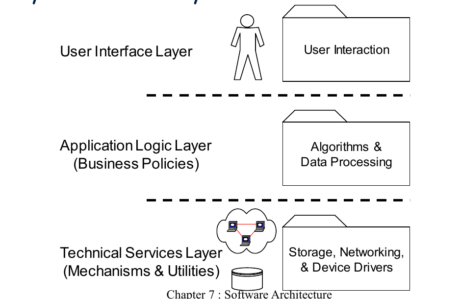
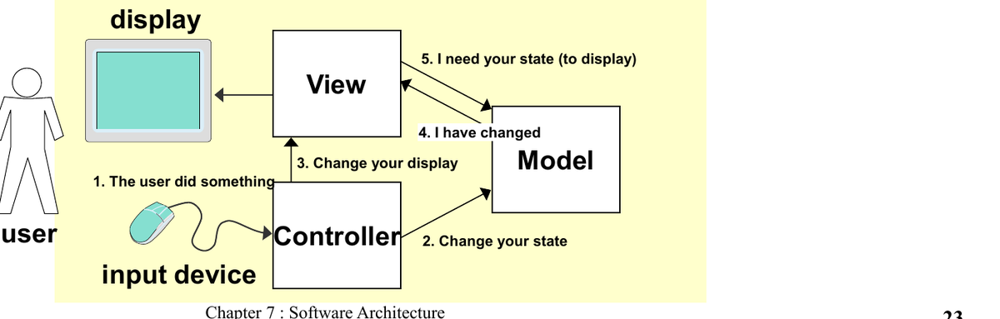
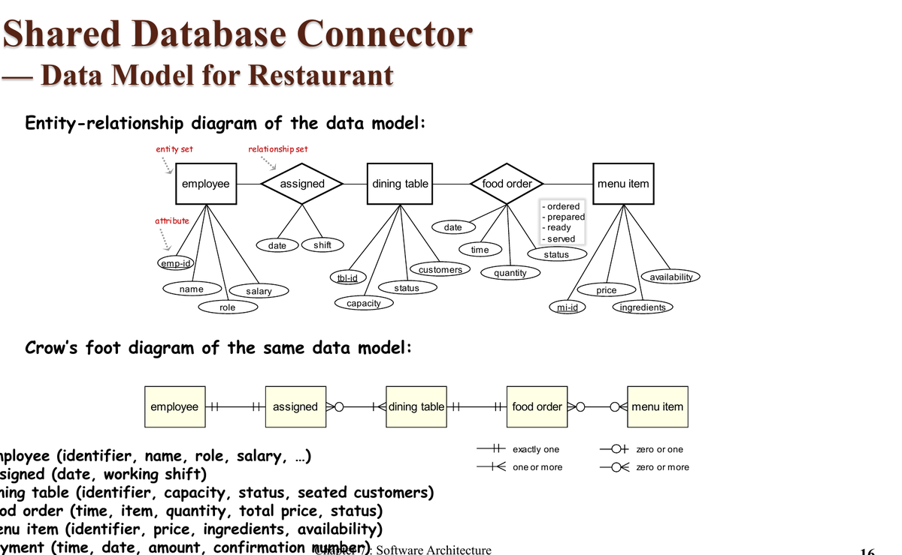

บทที่ 7 — Software Architecture
สองข้อเขียนจากรีวิวรุ่นพี่มาจากบทนี้: "เขียนสถาปัตยกรรมซอฟต์แวร์" และ "เขียน Schema" เราจะเรียนนิยามสถาปัตยกรรม, สไตล์ต่าง ๆ, REST/HTTP และการวาด ER Schema แบบ crow's foot — พร้อมตัวอย่าง CS-Hospital
🎯 เรียนจบบทนี้ คุณต้องทำสิ่งเหล่านี้ได้
- นิยามสถาปัตยกรรมซอฟต์แวร์ได้: "ชุดการตัดสินใจระดับสูงที่กำหนดโครงสร้าง (ส่วน + ความสัมพันธ์)" และรู้ว่า มันไม่ใช่ phase ของการพัฒนา
- บอกเหตุผลการแตกระบบ (decompose) ได้ 5 ข้อ
- จำสไตล์สถาปัตยกรรมหลัก (Client/Server, Central Repository, Layered, P2P, Microservices, MVC, REST, Pipe-and-Filter) พร้อมวาดภาพได้
- อธิบาย Client = triggering process, Server = reactive process และ HTTP methods GET/POST/PUT/DELETE
- วาด ER Schema แบบ crow's foot จากโจทย์ระบบ (แนวข้อ "เขียน Schema")
- อธิบาย MVC: Model/View/Controller ทำหน้าที่อะไร
📖 บทเรียน
บทที่ 2 บอกหลัก Modularity (หั่นระบบเป็นชิ้น) — บทนี้ตอบต่อ: หั่นแล้ว ประกอบกันอย่างไร? เชื่อมกันด้วยอะไร? คำตอบคือสถาปัตยกรรม
ซอฟต์แวร์ไม่ใช่คำสั่งเรียงยาว ๆ มันมีโครงสร้างแบบลำดับชั้น: Product line → System/product → Subsystems/Modules → Packages → Classes/Objects → Methods → Source code — แต่ลำดับชั้นแค่บอก "อะไรอยู่ในอะไร" ยังไม่ได้บอก ขั้นตอนหั่น และ ความสัมพันธ์ — สถาปัตยกรรมตอบสิ่งนี้
อุปมา: สถาปัตยกรรมซอฟต์แวร์ = แบบพิมพ์เขียวของอาคาร — ก่อนก่อสร้างต้องตัดสินว่า: มีปีกไหนบ้าง (decomposition) · ปีกต่อกันด้วยทางเดิน/ลิฟต์จุดไหน (connectors) · ใช้รูปแบบอาคารแบบไหน (style: คอนโดมิเนียมชั้นลอย = layered, หมู่บ้านเดี่ยวเท่ากัน = microservices)
Software Architecture = ชุดการตัดสินใจระดับสูง (high-level decisions) ที่กำหนดโครงสร้างของโซลูชัน — ส่วนต่าง ๆ ของระบบ (parts) และความสัมพันธ์ (relationships)
- เป็นการตัดสินใจหลักที่ทำตั้งแต่เนิ่น ๆ และกระทบส่วนใหญ่ของระบบ ("design philosophy") — แก้ทีหลังยากมาก
- เป็นการเลือกใช้วิธีที่พิสูจน์แล้ว (well-known solutions proven to work) กับปัญหาคล้ายกัน
- Software Architecture ไม่ใช่ phase ของการพัฒนา — ไม่ได้หมายถึงผลผลิตเฉพาะขั้นไหน (ไม่ใช่แค่ "high-level design")
ทำไมต้อง decompose (5 เหตุผล): ① เอาอย่าง divide-and-conquer จัดการความซับซ้อน ② เช็กว่าบางส่วนมีอยู่แล้ว reusable ได้ ③ โฟกัสส่วนที่สร้างสรรค์ เลี่ยง reinventing the wheel ④ รองรับ flexibility/evolution ด้วยการ decoupling (แต่ละส่วนพัฒนาแยกกันได้ — separation of concerns) ⑤ สร้างความได้เปรียบเชิงกลยุทธ์ที่ยั่งยืน
ตัวอย่างการตัดสินใจสถาปัตยกรรม (Safe Home): แบ่ง subsystem (ควบคุมอุปกรณ์ / จัดการ / เข้าถึงข้อมูลระยะไกล) · จับ SW ↔ HW (embedded / เดสก์ท็อป / สมาร์ตโฟน) · เลือกแพลตฟอร์ม (Android vs iOS, Web?) · เลือกสไตล์จับระบบเข้าด้วยกัน (architecture style)
การตัดสินใจเป็น "architectural" ถ้ามองจากขอบเขตปัจจุบันเท่านั้น — ตัดสินไม่ได้จากมุมแคบกว่านั้น (เช่นตัดสินเรื่องระดับ subsystem ไม่ได้จากมุมระดับ class) · ลำดับขอบเขต: product line > product/system > subsystem > class — ยิ่งสูง impact ยิ่ง systemic
Key Concerns 3 ข้อ: ① System decomposition — หั่นยังไง มีชิ้นครบไหม ชิ้นเข้ากันไหม คุยกันยังไง ② Cross-cutting concerns — คุณภาพครอบข้ามระบบ และการ tradeoff ระหว่างคุณภาพ ③ Conceptual integrity — ความสม่ำเสมอของแนวคิดทั้งระบบ
การตัดสินใจมัก involve compromise: "ดีที่สุด" ต่อ component เดี่ยวอาจไม่ถูกเลือก เมื่อมองรวมกันหรือในบริบทกว้าง (ชิ้นส่วนดีสุดของรถแข่ง + รถหรู ประกอบกันไม่ได้ชั้นเลิศ) — พิจารณาเพิ่ม: business priorities, ทรัพยากร, ความสามารถแกนขององค์กร, ลูกค้าเป้าหมาย, เทคโนโลยีมาแรง, การลงทุนเดิม, backward compatibility
1) มุมมอง (Views) — วิธี "มอง" สถาปัตยกรรม
| กลุ่มมุมมอง | รายการ | ใจความ |
|---|---|---|
| Module/Subsystem Views | Module Decomposition View / Dependency View / Layered View / Class View | decomposition = หั่น top-down (block diagram) · dependency = ใครใช้ใคร · layered = กรณีพิเศษของ dependency · class = "domain model" (OOA) และ "class diagram" (OOD) |
| Component and Connector Views | Process View / Concurrency View / Shared Data View / Client-Server View | process = ระบบเป็นชุด process คุยกันเป็นลำดับ · shared data = ใครแชร์ข้อมูลอะไร · client/server เช่น web browsing |
component นิยามพฤติกรรมผ่าน provided interface (สิ่งที่ให้บริการ — consumer เรียกใช้) และ required interface (สิ่งที่มันต้องเรียกใช้จากคนอื่น) — consumer เข้าถึงฟังก์ชันผ่าน required interface ("output port") ส่งเข้าไปที่ provider ที่ implement ผ่าน provided interface ("input port") — อุปมา: ปลั๊กไฟกับเต้า — รูปร่างต้องตรงกัน (interface) ถึงต่อกันได้ ไม่ต้องสนว่าข้างในสายวิ่งยังไง
องค์ประกอบของ Architecture Styles 4 ชิ้น: Components (processing elements ที่ "ทำงาน") · Connectors (ทางสื่อสาร: broadcast bus, middleware, events, procedure calls) · Interfaces (จุดต่อบน component/connector บอกทางข้อมูลไหลเข้าออก) · Configurations (การจัดวาง component+connector ทั้งหมดที่เป็นสถาปัตยกรรม)
2) 🎯 สไตล์สถาปัตยกรรม (Architecture Styles) — วาดได้ จำนิยามได้
ข้อสอบเขียน "สถาปัตยกรรมซอฟต์แวร์" ของระบบ web แบบ CS-Hospital — คำตอบดีคือวาดระบบผสม: Layered + Client/Server + Central Repository (สไลด์เองบอกว่า "Real System is a Combination of Styles")
2.1) Client/Server
Client = triggering process (ตัวกระตุ้น — ส่งคำขอเมื่อไหร่ที่มันอยาก) · Server = reactive process (ตัวรับ — คอยฟังคำขอแล้วตอบสนอง) · คุยกันผ่าน connector
ขั้นตอน 4 จังหวะ: (1) client ประกอบคำขอ (packing) → (2) server unpacking คำขอ → (3) server ประกอบคำตอบ (packing response) → (4) client unpacking ผลลัพธ์ใช้งาน — ส่งกันเป็น packets บน network connection
flowchart LR
U(("User")) --> CL["Client<br/>triggering — ริเริ่มคำขอเอง"]
CL -->|"request →"| CN["Connector"]
CN -->|"request →"| SV["Server<br/>reactive — คอยฟังและตอบสนอง"]
SV -->|"response ←"| CN
CN -->|"response ←"| CL
2.2) Layered (Multi-Tiered)
flowchart TB
UI["User Interface Layer<br/>User Interaction — หน้าจอ ปุ่ม ฟอร์ม"]
AL["Application Logic Layer<br/>(Business Policies) — อัลกอริทึม + ประมวลผลข้อมูล"]
TS["Technical Services Layer<br/>(Mechanisms and Utilities) — storage, networking, device drivers"]
UI -->|"ให้บริการชั้นบน ↑ · ใช้บริการชั้นล่าง ↓"| AL
AL -->|"ให้บริการชั้นบน ↑ · ใช้บริการชั้นล่าง ↓"| TS

2.3) MVC — Model-View-Controller
flowchart LR
U(("User")) -- "1. The user did something (ผู้ใช้ทำอะไรบางอย่าง)" --> C["Controller<br/>รับ input แปลความหมาย"]
C -- "2. Change your state (แก้ state)" --> M["Model<br/>ข้อมูล + state + logic เงียบ ๆ"]
M -- "4. I have changed (แจ้งว่าเปลี่ยนแล้ว)" --> V["View<br/>แสดงผลให้ผู้ใช้"]
V -- "5. I need your state (ขอ state มาแสดง)" --> M
V -- "3+6. Change your display (อัปเดตหน้าจอ)" --> U

2.4) อีก 4 สไตล์ — Pipe-and-Filter · Central Repository · P2P · Microservices
| สไตล์ | องค์ประกอบ/นิยาม | ตัวอย่าง |
|---|---|---|
| Pipe-and-Filter | Components = Filters (แปลง input → output) · Connectors = Pipes (สายข้อมูลไหลต่อกัน) | คำสั่ง UNIX: ls | grep -v xxx | more — ส่งผลลัพธ์เป็นท่อต่อกัน |
| Central Repository (database) | ใช้คลังข้อมูลกลางเป็นศูนย์แลกเปลี่ยนระหว่าง subsystems — ทุก subsystem เข้าถึงข้อมูลกลาง | Safe Home: ข้อมูล valid keys, access history, tenant profiles อยู่ DB เดียว ทุก subsystem อ่าน/เขียนผ่านมัน |
| Peer-to-Peer | ทุกโหนดบทบาทเท่าเทียม — เป็นได้ทั้งผู้ร้องขอและผู้ให้บริการ | แชร์ไฟล์/บล็อกเชน — ไม่มี server ศูนย์กลาง |
| Microservices | แบ่งระบบเป็นบริการเล็ก ๆ อิสระ คุยกันผ่านเครือข่าย — deploy แยกกันได้ | ระบบร้านอาหาร: บริการสั่งซื้อ / บริการครัว / บริการชำระเงิน แยกกัน |
Subsystem ควบคุมอุปกรณ์ + subsystem จัดการ + subsystem เข้าถึงระยะไกล ทั้งหมดแชร์ข้อมูลผ่าน Central Repository (valid keys, history, profiles) — ส่วนฝั่งเว็บ (browser → web server → application server) เป็น Tiered/Layered — ข้อเขียนตอบให้ผสมอย่างนี้แล้วตั้งชื่อสไตล์ชัด ๆ จะได้คะแนนเต็ม
2.5) REST + HTTP — ภาษาของเว็บ
สไตล์เว็บ: Client/Server แบบ Stateless — server ไม่จำประวัติคำขอเก่าของ client (session state อยู่ที่ client เอง) · ทรัพยากร (resource) ระบุด้วย URI · คำขอมีข้อมูลครบทุกอย่างที่ต้องใช้ · คำตอบเป็น representation มาตรฐาน (HTML, XML, JSON) มี hyperlink · มี intermediary (caching)
HTTP methods (คู่กับ CRUD): POST = create (สร้างทรัพยากรใหม่) · GET = read (อ่าน) · PUT = update (แก้) · DELETE = delete (ลบ) — ทริค: REST ใช้ URI = นาม (noun) เช่น /employees/ และ HTTP method = กริยา (verb) เช่น POST — เขียนตอบ: POST /employees/ HTTP 1.1 + ข้อมูล John Doe, waiter, 1000 คือการ create พนักงานใหม่
RESTful vs JSON-RPC (ตารางเทียบของสไลด์): REST เน้นทรัพยากร (nouns) นำทางได้, logic รันฝั่ง server, ใช้ HTTP method ทำ CRUD, body เป็น media มาตรฐานตาม negotiable, มี code-on-demand + caching · JSON-RPC เน้น procedure (verbs), logic ฝั่ง client มาก, URI เป็นที่อยู่ object, body เป็น JSON objects ล้วน
3) 🎯 Shared Database Connector — การเขียน Schema (ER Diagram + Crow's Foot)
สไลด์ตัวอย่างร้านอาหาร: Entity set (ตาราง) เช่น employee, dining table, food order, menu item, payment · Relationship set เชื่อมระหว่าง entity เช่น employee–assigned–table · Attribute = คอลัมน์ (emp-id, name, role, salary…) · สัญลักษณ์ Crow's foot บอกจำนวน: exactly one (ขีด 1) · one or more (ปีกอีก้า) · zero or one (วงกลม+ขีด) · zero or more (วงกลม+ปีก)
สไลด์เขียน schema แบบข้อความด้วย: employee (identifier, name, role, salary, …), assigned (date, working shift), dining table (identifier, capacity, status, seated customers), food order (time, item, quantity, total price, status), menu item (identifier, price, ingredients, availability), payment (time, date, amount, confirmation number)
erDiagram
EMPLOYEE ||--o{ DINING_TABLE : "assigned (date, shift)"
DINING_TABLE ||--o{ FOOD_ORDER : "receives"
FOOD_ORDER }o--o{ MENU_ITEM : "ordered (status)"
PAYMENT }o--|| FOOD_ORDER : "pays"
EMPLOYEE {
string empId PK "emp-id"
string name
string role
number salary
}
DINING_TABLE {
string tblId PK "tbl-id"
number capacity
string status
}
FOOD_ORDER {
string orderTime "time"
number quantity
number totalPrice
string status
}
MENU_ITEM {
string miId PK "mi-id"
number price
string ingredients
string availability
}

4) Problem Structure — รูปแบบปัญหาคลาสสิก 3 กลุ่ม
| ปัญหา | รูปแบบโซลูชัน (Structure) |
|---|---|
| 1. ผู้ใช้ทำงานกับระบบคอมพิวเตอร์ (โลกเสมือน) | 1.a Transformation: Feeding subsystem → Transformation subsystem → Receiving subsystem (input doc → output doc) · 1.b Simple editing: Data editor ↔ Data repository |
| 2. ระบบควบคุมโลกกายภาพอัตโนมัติ (ไม่มีผู้ใช้) | Required behavior: Controlling subsystem → Controlled subsystem |
| 3. ระบบเป็นคนกลางผู้ใช้↔โลกกายภาพ | 3.a Information display: Monitoring → Monitored (observe แล้วแสดงข้อมูล) · 3.b Commanded behavior: Controlling → Controlled โดยมี Operator สั่ง |
🎯 แนวข้อสอบของบทนี้
- "เขียนสถาปัตยกรรมซอฟต์แวร์" ของ CS-Hospital/CS-Pizza: วาดไดอะแกรม client/server + layered 3 ชั้น + database กลาง + ระบุชื่อสไตล์ → ดูเฉลยเต็มที่หน้า ติว Final
- "เขียน Schema": วาด ER crow's foot จาก entity ในโจทย์ (patient, staff, record…)
- จับคู่/เติมคำสไตล์: triggering/reactive (Client-Server), stateless + URI (REST), ให้บริการชั้นบน-ใช้ชั้นล่าง (Layered), filters+pipes (Pipe-and-Filter), เท่าเทียม (P2P), เล็กอิสระ (Microservices)
- MVC: บอกบทบาท M/V/C และเส้นทาง 1→6 ของการกดปุ่มหนึ่งครั้ง
- HTTP methods: GET/POST/PUT/DELETE จับคู่ CRUD
🏋️ โจทย์ซ้อมมือ (6 ข้อ)
เติมคำ (แนวข้อสอบ): ใน Client/Server อธิบายว่า Client เป็น ______ process และ Server เป็น ______ process
เฉลย
- Client = triggering process — เป็นตัวกระตุ้น ส่งคำขอเมื่อมันเลือกส่ง (times of its choosing)
- Server = reactive process — เสนอชุดบริการ คอยฟัง (listens) คำขอ แล้วตอบสนอง (reject หรือทำตามแล้วส่ง response)
- จำอุปมา: ลูกค้าเรียก / พนักงานคอยรับ
จับคู่ HTTP ↔ CRUD: create / read / update / delete จับกับ HTTP method ใด และเขียนตัวอย่าง request สร้างพนักงานใหม่ในระบบร้านอาหาร
เฉลย
- create → POST (สร้างทรัพยากรใหม่) · read → GET · update → PUT · delete → DELETE
- ตัวอย่างตามสไลด์:
POST /employees/ HTTP 1.1+Host: www.restaurant.com+ bodyname=John%20Doe&role=waiter&salary=1000— URI เป็นนาม (/employees/) method เป็นกริยา (POST)
จำแนกสไตล์: (a) ทีมเขียนคำสั่ง UNIX ต่อกันหลายคำสั่งส่งข้อมูลเป็นสาย (b) ระบบที่ทุกเครื่องเท่าเทียม ใช้ได้ทั้งส่งและรับ (c) แอปธนาคารที่หน้าจอ/ตรรกะ/ฐานข้อมูลแยกชั้นชัดเจน (d) ระบบที่ server ไม่จำคำขอเก่าของ client เลย
เฉลย
- (a) Pipe-and-Filter — Filters แปลงข้อมูล Pipes ส่งต่อ
- (b) Peer-to-Peer — บทบาทเท่าเทียม
- (c) Layered (Multi-Tiered) — UI / Application logic / Technical services
- (d) REST — stateless server ไม่มีความจำคำขอเก่า (session state อยู่ที่ client)
วาด Schema (เลียนแบบข้อสอบ ย่อส่วน): ระบบคลินิกเล็กมี: ผู้ป่วยจองคิวกับแพทย์ การจองหนึ่งครั้งมี 1 แพทย์ แพทย์หนึ่งคนรับจองได้หลายครั้ง การจองหนึ่งครั้งออกใบเสร็จ 1 ใบ — วาด ER crow's foot พร้อม attribute และ PK
แนวคำตอบ
- ขั้น 1 หา entity: อ่านโจทย์ทีละวลี — "ผู้ป่วย" / "แพทย์" / "การจอง" / "ใบเสร็จ" → 4 entities:
Patient,Doctor,Appointment,Invoice - ขั้น 2 attribute + PK: Patient(PK patient-id, name, phone) · Doctor(PK doctor-id, name, specialty) · Appointment(PK appt-id, date, time, status) · Invoice(PK invoice-id, amount, date)
- ขั้น 3 ความสัมพันธ์: Patient 1:N Appointment (ผู้ป่วย 1 จองได้หลายครั้ง) · Doctor 1:N Appointment (แพทย์ 1 รับหลายครั้ง / การจอง 1 ครั้งมี 1 แพทย์) · Appointment 1:1 Invoice (จอง 1 ครั้งออกใบเสร็จ 1 ใบ)
- ขั้น 4 สัญลักษณ์: ฝั่ง "หลายตัว" วาดปีกอีก้า (crow's foot) ฝั่ง 1 วาดขีด · เขียนกำกับความสัมพันธ์ (books / assigned / issues)
- เกร็ดสอบ: ไม่ต้องสวย แต่ต้องครบ 4 ชิ้น: entity ชื่อชัด, PK ระบุ, attribute สมเหตุผล, สัญลักษณ์จำนวนถูก
MVC เรียงจังหวะ: ผู้ใช้กดปุ่มลบเลขในเกมตัวเลข — เรียง 6 จังหวะการทำงานของ Model/View/Controller จากสไลด์
เฉลย
- 1. ผู้ใช้กระทำ → Controller รับจาก input device
- 2. Controller แปลความหมาย แล้วสั่ง Model "Change your state" (Model ปรับข้อมูล)
- 4. Model แจ้ง View ว่า "I have changed" (notification)
- 5. View ขอ state จาก Model ("I need your state to display")
- 3+6. View เปลี่ยนการแสดงผล ผู้ใช้เห็นหน้าจอใหม่ (visual feedback)
- สรุปบทบาท: Model = ข้อมูล/state/logic (oblivious to View+Controller, มี API ให้ดึง state + แจ้ง observer) · View = การนำเสนอ ดึงข้อมูลตรงจาก Model · Controller = รับ input แปลความหมายไปสั่ง Model
เขียนตอบสั้น: "Software Architecture is not a phase of development" หมายความว่าอะไร และทำไมการตัดสินใจเชิงสถาปัตยกรรมมักเกี่ยวข้องกับ compromise
เฉลย
- ไม่ใช่ phase: สถาปัตยกรรมไม่ได้หมายถึงผลผลิตเฉพาะของขั้นไหน (ไม่ใช่เอกสาร "high-level design" ที่ทำแล้วจบ) — มันคือชุดการตัดสินใจที่เกิดต่อเนื่องทั้งการพัฒนาและ evolution ทำตั้งแต่เนิ่น (บางทีตั้งแต่คุย requirement กับลูกค้า) และกระทบส่วนใหญ่ของระบบ
- compromise: design ที่ดีที่สุดของ component เดี่ยว (มองโดด) อาจไม่ใช่ที่เลือกเมื่อมองรวมกัน — เพราะเกณฑ์ "ดี" ต่างกัน (ดีสำหรับรถแข่ง ≠ ดีสำหรับรถหรู)
- ปัจจัยเพิ่ม: business priorities, ทรัพยากรที่มี, core competences, ลูกค้าเป้าหมาย, คู่แข่ง, เทรนด์, การลงทุนเดิม, backward compatibility — สถาปนิกต้องเทรดออฟ ไม่ใช่เลือก "เท่ที่สุด"